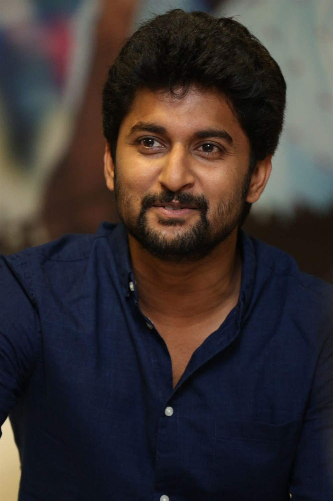

NATURAL STAR NANI

Ghanta Naveen Babu (born 24 February 1984), known professionally as Nani, is an Indian film actor, producer, and television presenter primarily known for his work in Telugu cinema. Nani made his film debut with the 2008 romantic comedy Ashta Chamma and went on to star in many commercially successful films. His performances in various films earned him two state Nandi Awards, one Filmfare Critics Award for Best Actor – South and two nominations in Filmfare Award for Best Actor – Telugu. Nani also won an award in Best Hero category at the 2013 Toronto After Dark Film Festival.
His successful projects include Ride (2009), Bheemili Kabaddi Jattu (2010), Ala Modalaindi (2011), Pilla Zamindar (2011), Eega (2012), Yeto Vellipoyindhi Manasu (2012), Yevade Subramanyam (2015), Bhale Bhale Magadivoy (2015), Krishna Gaadi Veera Prema Gaadha (2016), Gentleman (2016), Nenu Local (2017), Ninnu Kori (2017), Middle Class Abbayi (2017), and Jersey (2019).
In 2013, Nani produced his first film, D for Dopidi, which became a commercial success at the box office. In 2018, his second production venture under the banner of Wall Poster Cinema, Awe was also a critical and commercial success. In the same year, Nani hosted the second season of the Telugu reality TV show Bigg Boss. His performance in Jersey (2019) is regarded as one of the "100 Greatest Performances of the Decade" by Film Companion.
Career beginnings and struggle (2008–2011)
As an undergraduate, Nani got addicted to movies, citing Mani Ratnam as a major influence. He wanted to become a director; producer Anil, a distant relative of his, allowed Nani to work on his film Radha Gopalam as a "clap director" alongside director Bapu.He then worked for films including Allari Bullodu, Dhee and Astram. Nani took a sabbatical to work on a film script. Bhargavi Mallela, a friend who was then working as a radio jockey for World Space Satellite, offered Nani work as an RJ.He accepted and worked for one year, hosting a program named "Non-Stop Nani".
Director Mohan Krishna Indraganti noticed Nani in an advertisement and offered him a role in the film Ashta Chamma, also starring Swati Reddy.Ashta Chamma was well received by critics and Nani's performance was praised by them. Sify.com wrote "Nani has a very good screen presence. He has good emotions and dances well, though his body language sometimes reminds of Subhalekha Sudhakar – May this be treated as a compliment to the ease that the veteran actor shows on the screen! His diction is good too."His second film, Ride, was produced by Bellamkonda Suresh, with Tanish, Swetha Basu Prasad and Aksha Pardasany playing important roles. Ride was also a notable success at the box office.He next starred in Satyam Bellamkonda's film Snehituda... opposite Maadhavi Latha. Snehituda... opened to negative reviews and the film was a flop at the box office.In 2010, he played the main role in the film Bheemili Kabaddi Jattu, a remake of Vennila Kabadi Kuzhu, with Saranya Mohan reprising her role as the heroine. The film opened to positive reviews with Nani's performance receiving appreciation. Rediff said Nani "perfectly fits into the role" and commended him for selecting the script,and Oneindia Entertainment commented that Nani "has given his best" and "suited perfectly to the role".[12] The film was a surprise hit at the box office.
Breakthrough and initial success (2011–2012)
His first release in 2011, Ala Modalaindi, was a romantic comedy written and directed by Nandini Reddy. Nithya Menen was the female lead of the film, making her debut in Telugu. Nani's performance in the film received positive reviews, with critics noting that he was "completely natural" and "living [his] role".The film was a blockbuster at the box office.Simultaneously he did a Tamil film, Veppam, with his friend Anjana as director which marked his debut in Tamil cinema. Veppam received mixed reviews, but Nani and Bindu Madhavi were appreciated. The Times of India called their debuts "confident"while Sify called Nani's performance "riveting". It was dubbed into Telugu as Sega. Both the versions were flops at the box office. Nani's final release of 2011 was Pilla Zamindar, in which he reunited with fellow Ashta Chemma actor Srinivas Avasarala. Pilla Zamindar opened to mostly positive reviews from critics, and Nani's performance as a spoilt-brat-turned-leader was well appreciated. Rediff wrote "Pilla Zamindar is Nani's show all the way. He lives up to the role and is able to portray the kaleidoscope of emotions demanded of him. "IndiaGlitz wrote, "Performance-wise, Nani delivers a matured output in the second half as a youth in self-introspecting and self-correcting mode."The film was a hit at the box office, prompting a Tamil dubbed release under the title Jameen. Nani's next release was S. S. Rajamouli's live action project Eega. Shot simultaneously in Tamil as Naan Ee, it featured Nani, Samantha Ruth Prabhu and Kannada actor Sudeep. Eega received a positive response. IBN Live said that "Nani sizzles as the lover boy in the few scenes he is seen",while Rediff said that he "makes a mark in his brief role".The film was a blockbuster at the box office and was dubbed into Hindi as Makkhi and into Malayalam as Eecha.
His last release in 2012 was Gautham Menon's Yeto Vellipoyindhi Manasu opposite Samantha Ruth Prabhu once again. It was the simultaneously shot Telugu version of the Tamil film Neethane En Ponvasantham which featured Jiiva in place of Nani. Nani made a guest appearance in the Tamil version too. His portrayal of Varun Krishna was highly appreciated by critics. The Hindu wrote "Nani rises to the occasion with a mature performance. He speaks volumes through his eyes and conveys Varun's thoughts through the smallest of mannerisms. The climax completely belongs to him."IndiaGlitz wrote "If Samantha's maturity as an actor is obvious, Nani's knack is equally brilliant. He is quintessentially natural and is almost impeccable. The way he sings "Priyatama Neevachata Kushalama" sets the stage for a performance that deserves a big round of applause."His performance in Yeto Vellipoyindi Manasu is considered to be one of his best performances till date. IndiaGlitz while reviewing the Telugu version of his 2014 Tamil film Aaha Kalyanam wrote: "Nani's best-ever act is 'Yeto Vellipoyindi Manasu' and he may not better that act soon, that is in a similar role".Though the film received mixed reviews from film critics,it had a positive response at the box office, especially in multiplexes due to Nani and Samantha's performances.

Commercial fluctuations and film production (2013–2015)
Nani turned producer for the film D for Dopidi, which was co-produced by Raj Nidimoru and Krishna D.K. and starred Sundeep Kishan, Varun Sandesh, and Naveen Polishetty. He also lent his voice to the film.The film was a success at the box office.
In 2014, Nani was first seen in Krishna Vamsi's Paisa. The film revolved around the power of money and its influence over everything in society.Nani played the role of Prakash, a Sherwani model who is obsessed with gaining money.The film opened to negative reviews, yet Nani's performance was appreciated by critics. The Hindu wrote, "Nani holds the film together and proves his merit yet again. He shuns all the refinement he showed in his previous romantic characters and breathes life into the part of a smart Alec threatening to hold up the shooting of a sherwani commercial for Rs. 200 more. The film's highlight is the scene where he chances upon bags of cash and his reaction after that."[34] The film was a disaster at the box office.He next starred in Yash Raj Films' maiden south Indian production Aaha Kalyanam, the Tamil remake of the 2010 Hindi film Band Baaja Baarat (also produced by Yash Raj Films). It was partly shot simultaneously in Telugu under the same title. The film received mixed to negative reviews, but Nani's performance as Shakti was well received. Sify called his performance "pitch-perfect".While IndiaGlitz wrote, "Nani is the apple of everyone's eyes once again, adding a good dose of humour in his presence".Behindwoods commented that "Aaha Kalyanam provides great scope for the leads and Nani, who is known for his intense roles, fits the character of a carefree youth perfectly, with his broken English and casual attitude." This movie was a commercial failure.In 2015, Nani played a dual role for the first time in the political thriller film Janda Pai Kapiraju, co-starring Amala Paul. The film was simultaneously made in Tamil as Nimirndhu Nil with Jayam Ravi in Nani's role. This movie was a disaster at the box office.
Awards and recognition
| Year |
Award |
Category |
Film |
| 2011 |
Vijay Award |
Best Debut Actor |
Veppam |
| 2012 |
South Indian Inetrnational Movie Awards |
Rising Male Hero |
Eega |
| 2013 |
Nandi Awards |
Best Actor |
Yeto Vellipoyindhi Manasu |
| 2015 |
CineMAA Awards |
Best Actor |
Bhale Bhale Magadivoy |
| 2016 |
IIFA Utsavam |
Best Performance in a leading role – Male |
Gentleman |
| 2017 |
Zee Cinemalu Awards 2017 |
Boy Next Door,Golden Star of the Year |
Krishna Gaadi Veera Prema Gaadha |
| 2020 |
Zee Cinemalu Awards 2020 |
Favorite Actor of the Year Male |
Jersey |